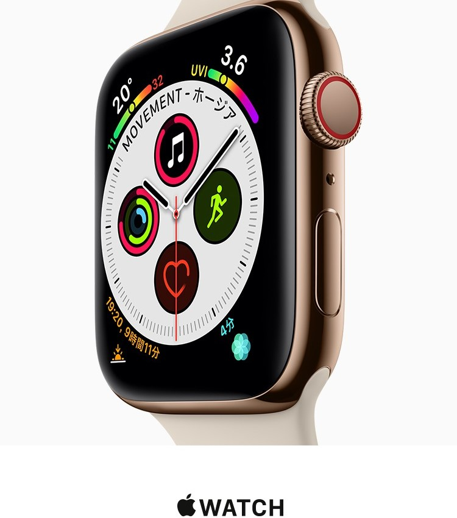
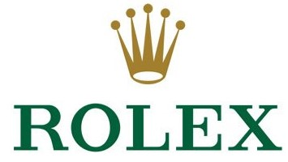

Q1.時計は自分自身を表現できるもの
Q2.時計メーカーと時計ブランドの違いを説明できる
Q3.物事を判断する時は、論理を順序だてるところから始める
Q4.他人に自分の時計を自慢したい
Q5.時間は大体スマートフォンで確認する

超有名ですね。スマートフォンで「Iphone」シリーズを使っている人にはなじみ深いメーカーだと思います。時計をコンセプトに時計を販売しているわけではありませんが、近年から良く聞くスマートウォッチで「Apple Watch」を売りに出しているメーカです。ちなみに、スマートウォッチとは電話やメールなど様々な機能を使用できる腕時計型のデバイス(端末)のことを言います。従って「Apple Watch」とは、Appleが開発・販売しているスマートウォッチとなります。日本人のスマホユーザーの大半がAPPLEを使っていますので、もしあなたが「Iphone」などの端末を持っているのであれば、APPLEの「Apple Watch」を試してみてもいいと思います。
カシオは日本のメーカで、世界の時計業界において一番のコスパを誇るかもしれないと言われる時計メーカーです。カシオという名前だけだとぱっと来ない人もいるかもしれませんが、大体の人が人気の高いG-SHOCKと聞くと連鎖的に思い浮かべられるメーカです。（対照的に、実は良くG-SHOCKがメーカ名ではなくカシオだということを知らない人もいますが）カシオの何が良いのか、その答えには「全部！」と答えたいですが、ちゃんと絞ってこたえるとしたら「デジタル時計」と答えられます。元々カシオという会社は「カシオ計算機」という名の通り、昔から計算機を作る会社でした。そのためか、カシオが手掛けるデジタル時計は高性能で、安く、さらに強力なデジタル時計G-SHOCKなどのモデルを開発したことから、世界のデジタル時計の代表と言えます。せっかく日本に住んでいるのなら一つは欲しいメーカー物です。

スイス高級時計メーカ、ロレックス。恐らく時計についてあまり知らない人でも高級時計の話題になると、必ず一回ぐらいは聞くことがあるのではないでしょうか。ロレックスの歴史は濃く、世界で初の完全防水ケースを開発したり、大昔に時計に日付機能作ったりと、腕時計の実用性を飛躍的に高めた時計業界を代表するメーカです。創業以来「最高峰の実用時計」を念頭に開発に挑戦し続けているメーカーですので、あなたはきっと、このメーカーを通して時計の世界を知っていくかもしれません。
日本のメーカーで、庶民的な時計としてよく聞くシチズン。日本人に時計と聞くと大体この時計のメーカー名が出るといっても過言ではありません。シチズンは日本の国産時計としてとても人気で有名ですが、実は海外においてもとても人気が高く有名な時計メーカです。海外の時計メーカに劣らない高性能さとデザインが備わっており、かつ、安価で購入できることから、日本メーカーシチズンという名から「日本人による市民のための時計」として親しまれていたりします。せっかく日本にい住んでいるのなら一つは持っておきたいメーカ物です。